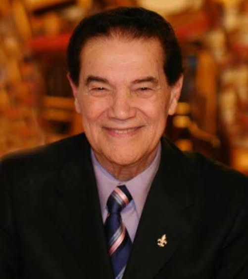

Divaldo Pereira Franco ComMM (Feira de Santana, 5 de maio de 1927 — Salvador, 13 de maio de 2025) foi um professor, médium, escritor, orador, e filantropo brasileiro, considerado um dos maiores divulgadores da doutrina espírita. Em 1952, fundou, com Nilson de Souza Pereira, a instituição de caridade Mansão do Caminho, que atende diariamente cerca de seis mil pessoas e abriga mais de três mil, centenas delas registradas como filhos do médium. Os direitos autorais de seus mais de 250 livros psicografados, que já venderam mais de oito milhões de exemplares, foram doados em cartório para esta e outras instituições filantrópicas. Foi amplamente reconhecido como conferencista e missionário do espiritismo no Brasil e no exterior, sendo alcunhado "Paulo de Tarso do Espiritismo".
Divaldo, desde jovem, teve vontade de cuidar de crianças. Educou mais de 600 filhos, hoje emancipados, a maioria com família constituída e a própria profissão, como professores (magistério), contadores, administradores, psicólogos, médicos, entre outros. Divaldo possui ainda mais de 200 netos e bisnetos.
Na década de 60 iniciou-se a construção de escolas-oficinas profissionalizantes e de atendimento médico. Hoje a Mansão do Caminho é um admirável complexo filantrópico que atende a 3 000 crianças e jovens carentes, na Rua Jayme Vieira Lima, 104 – Pau da Lima, um dos bairros periféricos mais carentes de Salvador; tem 83 000 m² e 43 edificações.
A obra é basicamente mantida com a venda de livros mediúnicos, fitas e DVDs gravados nas palestras.
O Centro Espírita Caminho da Redenção administra, dentre outros órgãos assistenciais: